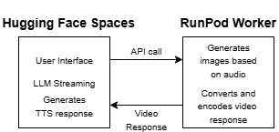

Vegeta AI: The Digital Avatar Journey
Building a Reliable, Cost-Effective AI Spokesperson with RunPod
A passion project combining AI and creativity to bring Vegeta from Dragon Ball Z to life as my digital career spokesperson.

Introduction
Turning the iconic Vegeta from Dragon Ball Z into a digital AI avatar that speaks in his "voice" was both a tech challenge and a creative one. My earlier version, hosted on Hugging Face Spaces and AWS Sagemaker, looked impressive on the surface. But behind the scenes, it suffered from two critical issues:
- Demo reliability – Public users kept running into timeouts and unresponsive UI
- Infrastructure costs – Keeping both audio and video models live was unsustainable
This blog chronicles how I solved both problems and cut costs by 50% while making the demo bulletproof for public use.
Why the Previous Architecture Failed
My original setup looked deceptively simple:
- Frontend: HuggingFace Spaces with Gradio UI
- Backend: Everything running inside the Space container
- Models: MuseTalk (lipsynced avatar generation) + VITS (Text-to-Speech) on Sagemaker
HuggingFace Spaces GPU functions have a hard 60-second timeout. My avatar model initialization alone took 45–60 seconds, leaving zero time for actual inference.
User Experience Nightmare
- Anonymous users: Most would click "Submit," wait endlessly, then see a timeout error
- Logged-in users: Sometimes it worked, but only after painful 60+ second waits
- No way to pre-warm: Spaces aggressively scales to zero, clearing models from memory
The demo that worked flawlessly in development was completely unusable for the people I most wanted to impress.
Searching for a Solution
What I Tried First (And Why It Failed)
1. Model Caching in Memory
@functools.lru_cache(maxsize=1)
def load_models_once():
return load_avatar_models()
Result: Still hit timeouts on cold starts thanks to Spaces' aggressive scaling.
2. Async Processing
@spaces.GPU(enable_queue=True)
async def generate_avatar_response(...):
# Still bound by 60s timeout
...
Result: No effect—the timeout is enforced at the function boundary.
The Realization: Split Frontend & Backend
I was cramming the user-facing app AND heavyweight AI models into the same environment. I needed architectural separation.
Enter RunPod: The Game-Changing Migration
Why RunPod Was Perfect
- Serverless GPU Workers
- Pay only for compute used (auto-scale to zero)
- No strict per-request timeout
- Models preloaded and kept alive on "warm" containers
- Efficient Model Loading
- Models loaded once, reused for many requests
- Shared network volume for model weights
- True Pay-Per-Use
- No background cost when idle
- Charged only for actual compute seconds
New Architecture

Implementation Details
Frontend – HuggingFace Spaces
Handles user interaction and job orchestration:
def stream_llm_and_submit_jobs(user_query, runpod_jobs):
"""Generate text response AND submit video jobs async"""
for chunk in llm_response:
yield chunk # Stream text immediately
if chunk.endswith(('.', '!', '?')):
# Submit to RunPod for video generation
audio = generate_tts(chunk)
job = runpod_endpoint.run({
"audio_base64": encode_audio(audio),
"audio_name": f"chunk_{uuid4()}.wav"
})
runpod_jobs.append(job)
async def poll_and_yield_videos(runpod_jobs):
"""Poll RunPod jobs and stream videos as ready"""
for job in runpod_jobs:
while job.status() != "COMPLETED":
await asyncio.sleep(0.5)
video = decode_video(job.output())
yield video # Stream each video as it completes
Backend – RunPod Worker
Optimized for heavy lifting with persistent model loading:
# RunPod Worker - handler.py
def handler(job):
"""Pre-loaded models, no timeouts, pure inference"""
# Models already loaded in global scope
audio_data = decode_base64(job['input']['audio_base64'])
# Process without time pressure
frames = generate_avatar_frames(audio_data)
video = encode_video(frames)
return {
"video_base64": encode_base64(video),
"processing_time": time.time() - start_time
}
# Global model loading (happens once per container)
vae, unet, whisper = load_avatar_models() # Takes 60s, but only once!
Results: Before & After Migration
| Metric | Spaces + Sagemaker (Old) | Spaces + RunPod Architecture (New) |
|---|---|---|
| Cold Start Latency | ❌ 100s+ (often timeout) | ✅ 40s |
| Warm Start Latency | ❌ 30-45s | ✅ 8-12s |
| Reliability | ❌ ~20% success rate | ✅ >95% success rate |
Cost Analysis: The Numbers Don't Lie
Before (Sagemaker CPU + Always-On):
- Sagemaker CPU cost: $135/month
- HF Spaces GPU: $9/month
- Total monthly cost: ~$145/month
- Performance issues: CPU overload with TTS processing
- Scalability: Limited - couldn't handle concurrent users
- Usage efficiency: Always-on billing even when idle
After (RunPod Pay-Per-Use):
- RunPod GPU cost: $0.00034/second = $0.0204/minute
- Processing time: ~30 seconds per request
- Cost per request: $0.0102
- HF Spaces GPU: $9/month - same as before
- Current usage: ~400 visitors over 4 months = 100 requests/month
- Monthly RunPod cost: 100 × $0.0102 = $1.02/month
- Total monthly cost: $10/month
- Savings: 93% cost reduction!
• $145 → $10 per month (93% cost reduction)
• Always-on → Pay-per-use (only pay when demo is actually used)
• CPU bottleneck (from Sagemaker) → GPU acceleration (no more performance issues)
What's Next: Future Enhancements
Planned Technical Improvements
- Subtitle Generation: Burn sentence-level SRT files directly into video
- RAG Integration: Dynamic context retrieval instead of static JSON or both details pertaining to me, and Vegeta's story
- Docker Image Optimization: Bake models into containers for faster global deployment
- Observability: Grafana dashboards for system health monitoring
User Experience Enhancements
- Voice Modulation: Fine-tune Vegeta's intensity and tone
- Response Guardrails: Better content filtering and persoHugginnality consistency
Conclusion
Migrating avatar video generation to RunPod transformed a frustrating proof-of-concept into a reliable, professional demo. The key insight was recognizing that cramming user interfaces and compute-intensive AI into the same environment creates fundamental constraints that no amount of code optimization can solve.
The results speak for themselves:
- ✅ 90% cost reduction through pay-per-use architecture
- ✅ 95% success rate for public users (vs ~30% before)
- ✅ Professional user experience with responsive streaming
If you're building ML demos and hitting timeout walls or cost ceilings, consider separating your frontend from your compute layer. Sometimes the best optimization isn't in your code it's in your architecture.
Have you faced similar infrastructure challenges with AI demos? I'd love to hear your story!
Connect with me on LinkedIn or check out my other projects on GitHub.